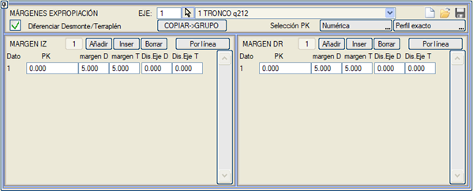

| |
|
KAMULAŞTIRMA SINIRI
|
Bu menü, dolgu şev eteğinden veya yarma şev başından itibaren ISPOL#.per enkesitlerinde (# eksen numarasıdır) gösterilecek arazi payını (sınırını) tanımlamayı sağlar.  Arazideki bu son nokta, daha sonra ilgili .lil dosyaları ile kamulaştırma sınırlarını planda çizmek için kullanılır. Eğer herhangi bir değer girilmezse, program Boykesit menüsündeki [SEÇENEKLER] altında tanımlanan VARSAYILAN KAMULAŞTIRMA SINIRI değerini kullanır; bu değer varsayılan olarak 5 metredir. Kamulaştırma sınırlarına ait bilgiler .vol dosyalarında saklanır, ancak aynı zamanda [Kaydet]  ve [Yükle] ve [Yükle]  butonları aracılığıyla .mge dosyalarına bağımsız olarak kaydedilebilir ve bu dosyalardan geri yüklenebilir. butonları aracılığıyla .mge dosyalarına bağımsız olarak kaydedilebilir ve bu dosyalardan geri yüklenebilir.Kamulaştırma sınırı değeri, Eksene Mesafe onay kutusu işaretlenerek eksene olan plan mesafesi olarak verilebilir ve ayrıca [Çizgiden al] seçeneği ile bir çizgi kullanılarak da tanımlanabilir. Bu son durumda, tablodaki değerler eksene olan mesafe olarak kabul edilir. Hemen yanındaki bayrak (flag) aktif edilirse, seçilen çizgi, mevcut eksenle aynı gruptaki tüm eksenlere uygulanır. Aynı anda hem platform kenarına olan bir mesafe hem de eksene olan minimum bir mesafe tanımlanabilir, böylece kamulaştırma sınırı her iki koşulu da sağlamak zorunda kalır. Yarma/Dolgu için Farklı Tanımla onay kutusu aktif hale getirildiğinde, program yarma ve dolgu için farklı kamulaştırma sınırları tanımlanmasına olanak tanır. 
Kamulaştırma sınırı tanımından memnun olduğumuzda, bu yapılandırmayı gruptaki tüm eksenlere uygulamak için [KOPYALA -> GRUP] aracını kullanabiliriz. |